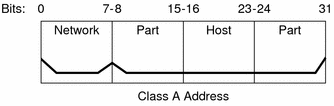
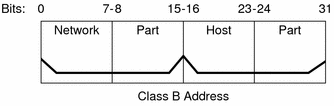

Previous
Previous
protocols Database
The protocols database lists the TCP/IP protocols that are installed on your system and their protocol numbers. The Solaris installation program automatically creates the database. This file seldom requires any administration.
The protocols(4) man page describes the syntax of this database. An example of the /etc/inet/protocols file follows.
Example 10-9 /etc/inet/protocols File
# # Internet (IP) protocols # ip 0 IP # internet protocol, pseudo protocol number icmp 1 ICMP # internet control message protocol tcp 6 TCP # transmission control protocol udp 17 UDP # user datagram protocol |
services Database
The services database lists the names of TCP and UDP services and their well-known port numbers. This database is used by programs that call network services. The Solaris installation automatically creates the services database. Generally, this database does not require any administration.
The services(4) man page contains complete syntax information. An excerpt from a typical /etc/inet/services file follows.
Example 10-10 /etc/inet/services File
# # Network services # echo 7/udp echo 7/tcp echo 7/sctp6 discard 9/udp sink null discard 11/tcp daytime 13/udp daytime 13/tcp netstat 15/tcp ftp-data 20/tcp ftp 21/tcp telnet 23/tcp time 37/tcp timeserver time 37/udp timeserver name 42/udp nameserver whois 43/tcp nickname |
Routing Protocols in the Solaris OS
Solaris system software supports two routing protocols: Routing Information Protocol (RIP) and ICMP Router Discovery (RDISC). RIP and RDISC are both standard TCP/IP protocols.
Routing Information Protocol (RIP)
RIP is implemented by in.routed, the routing daemon, which automatically starts when the system boots. When run on a router with the s option specified, in.routed fills the kernel routing table with a route to every reachable network and advertises "reachability" through all network interfaces.
When run on a host with the q option specified, in.routed extracts routing information but does not advertise reachability. On hosts, routing information can be extracted in two ways:
Do not specify the S flag (capital "S": "Space-saving mode"). in.routed builds a full routing table exactly as it does on a router.
Specify the S flag. in.routed creates a minimal kernel table, containing a single default route for each available router.
ICMP Router Discovery (RDISC) Protocol
Hosts use RDISC to obtain routing information from routers. Thus, when hosts are running RDISC, routers must also run another protocol, such as RIP, in order to exchange router information.
RDISC is implemented by in.routed, which should run on both routers and hosts. On hosts, in.routed uses RDISC to discover default routes from routers that advertise themselves through RDISC. On routers, in.routed uses RDISC to advertise default routes to hosts on directly-connected networks. See the in.routed(1M) man page and the gateways(4) man page.
Network Classes
Note - Class-based network numbers are no longer available from the IANA, though many older networks are still class-based.
This section provides details about IPv4 network classes. Each class uses the 32-bit IPv4 address space differently, providing more or fewer bits for the network part of the address. These classes are class A, class B, and class C.
Class A Network Numbers
A class A network number uses the first 8 bits of the IPv4 address as its "network part." The remaining 24 bits contain the host part of the IPv4 address, as the following figure illustrates.
Figure 10-3 Byte Assignment in a Class A Address
The values that are assigned to the first byte of class A network numbers fall within the range 0-127. Consider the IPv4 address 75.4.10.4. The value 75 in the first byte indicates that the host is on a class A network. The remaining bytes, 4.10.4, establish the host address. Only the first byte of a class A number is registered with the IANA. Use of the remaining three bytes is left to the discretion of the owner of the network number. Only 127 class A networks exist. Each one of these numbers can accommodate a maximum of 16,777,214 hosts.
Class B Network Numbers
A class B network number uses 16 bits for the network number and 16 bits for host numbers. The first byte of a class B network number is in the range 128-191. In the number 172.16.50.56, the first two bytes, 172.16, are registered with the IANA, and compose the network address. The last two bytes, 50.56, contain the host address, and are assigned at the discretion of the owner of the network number. The following figure graphically illustrates a class B address.
Figure 10-4 Byte Assignment in a Class B Address
Class B is typically assigned to organizations with many hosts on their networks.
Class C Network Numbers
Class C network numbers use 24 bits for the network number and 8 bits for host numbers. Class C network numbers are appropriate for networks with few hosts--the maximum being 254. A class C network number occupies the first three bytes of an IPv4 address. Only the fourth byte is assigned at the discretion of the network owners. The following figure graphically represents the bytes in a class C address.
Figure 10-5 Byte Assignment in a Class C Address

The first byte of a class C network number covers the range 192-223. The second and third bytes each cover the range 1- 255. A typical class C address might be 192.168.2.5. The first three bytes, 192.168.2, form the network number. The final byte in this example, 5, is the host number.